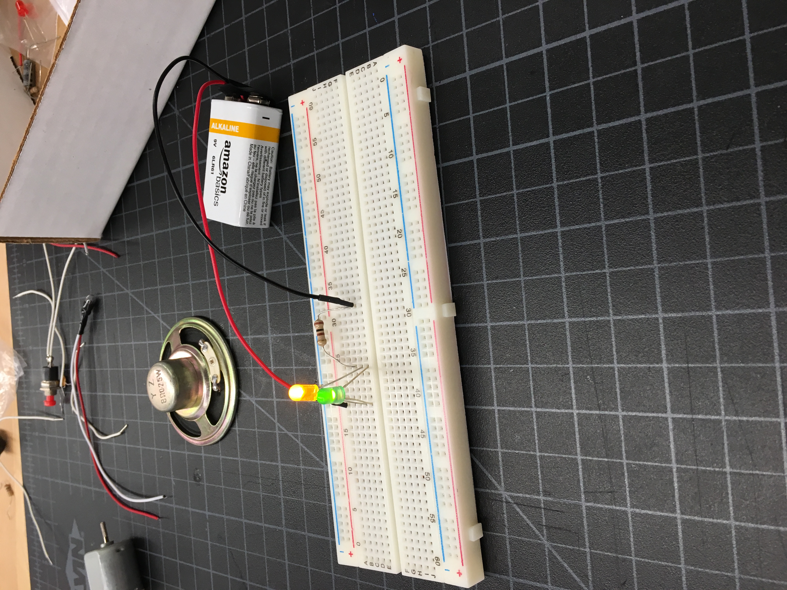
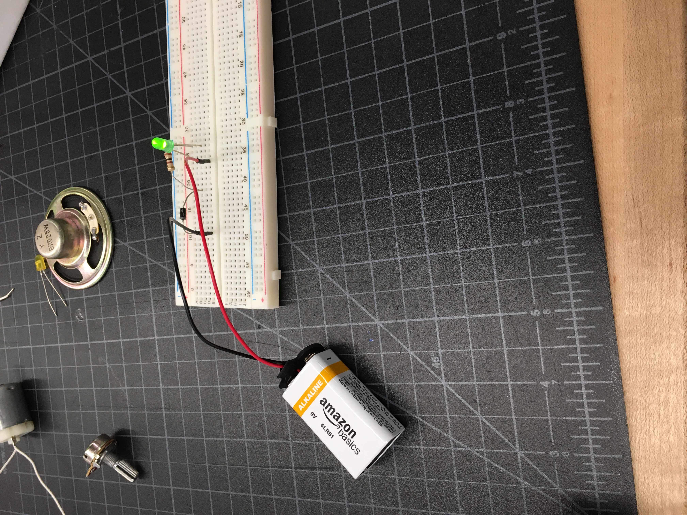
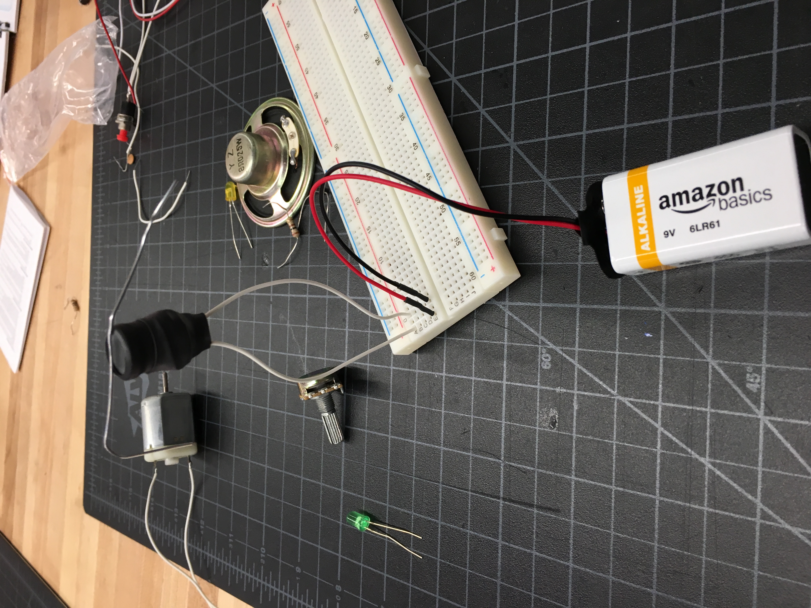
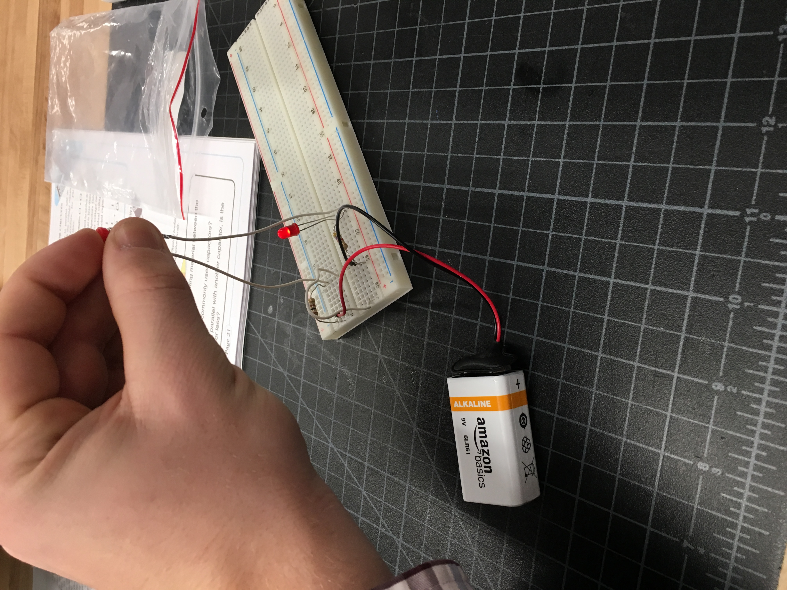
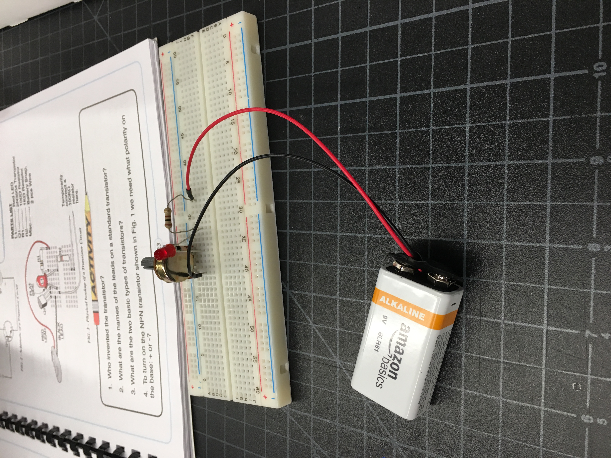
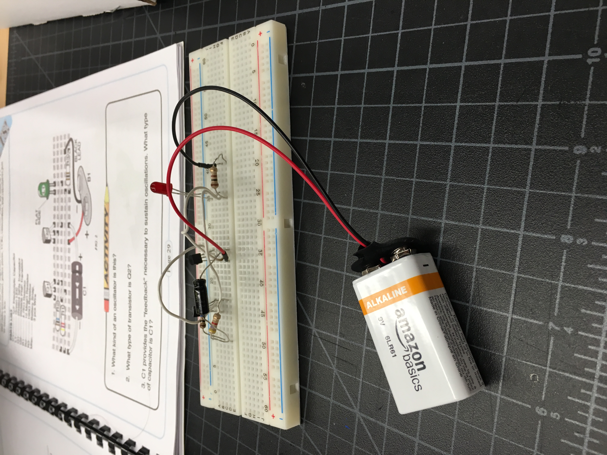
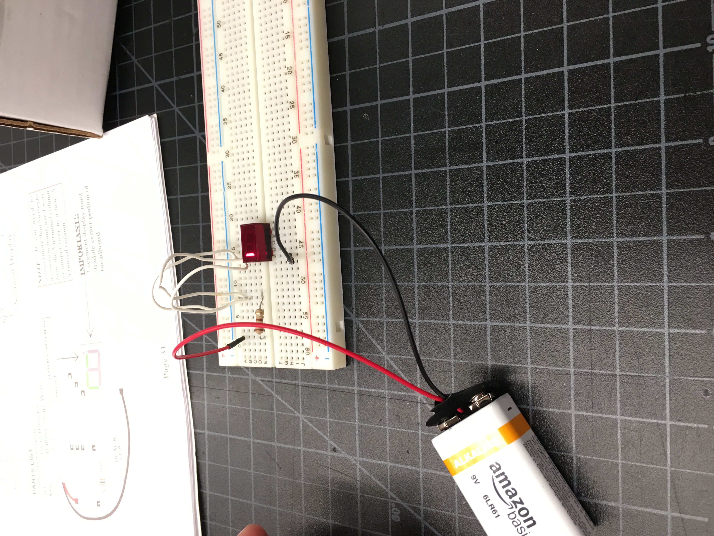
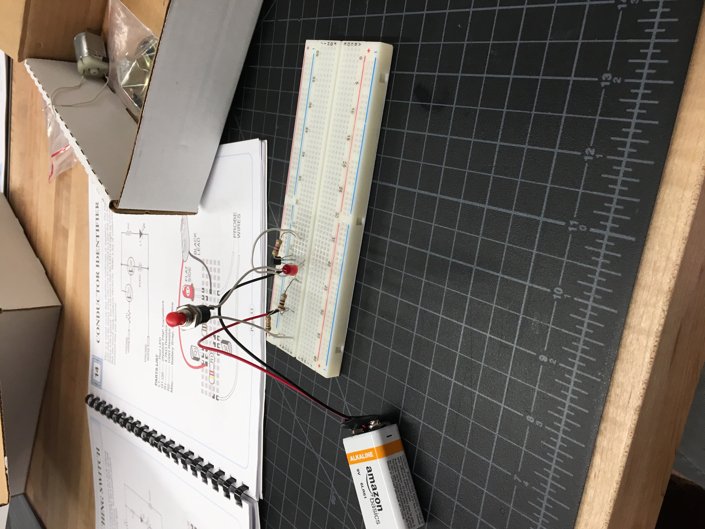
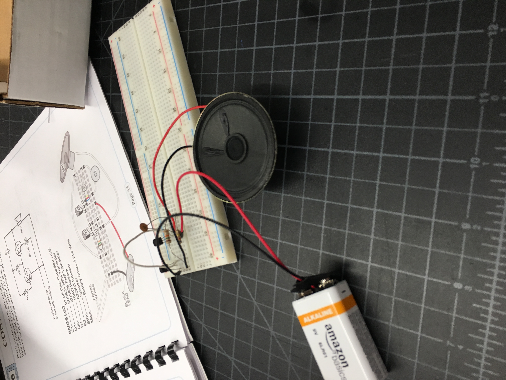
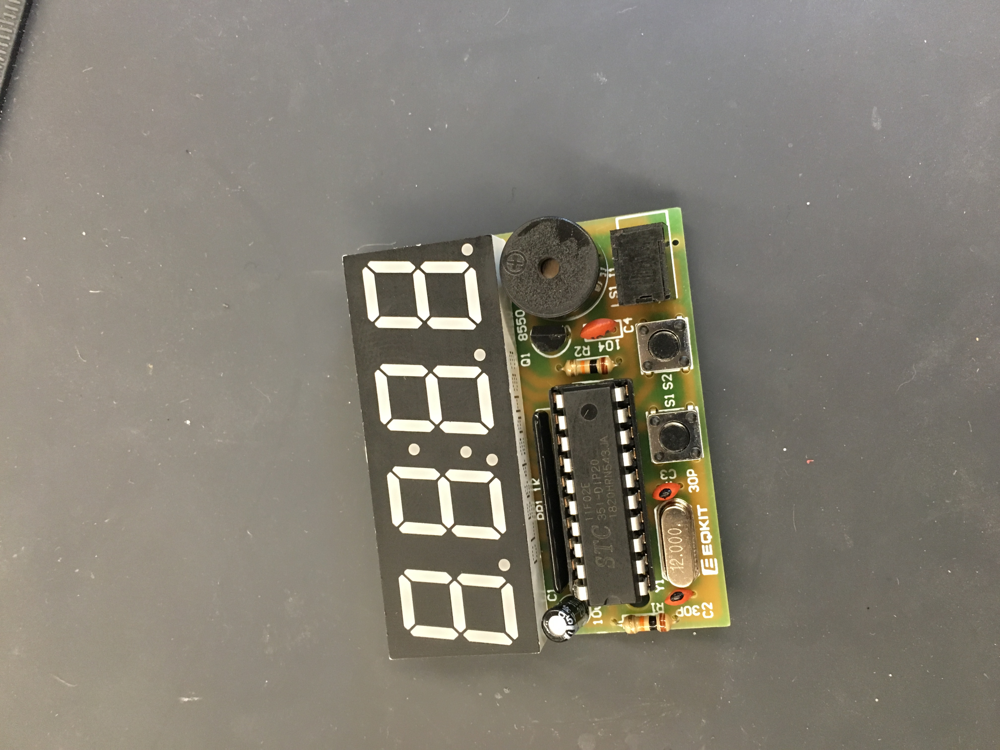

Home Page
Cycle 8
What I did
This week was an interesting one. We did soldering and electronics, and I am impressively bad at soldering.
The electronics portion went well, making circuits using a kit and a BreadBoard. We had to make 10, as seen below.









After finishing these circuits, we had to then make a clock from a kit, soldering all the pieces
onto a circuit board. This process seemed to be going well for me until I finished, when the clock,
when plugged in, only showed faint numbers on half the screen and beeped at random times. I'm not sure
why this happened, but I think I will stick to buying completed clocks from now on.
